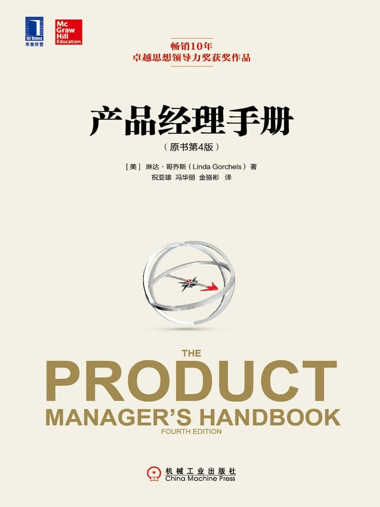

注：【】部分为笔者心得，非原文摘抄。
- 要成为一个成功的产品经理，需要具备大量高超的技能。更重要的是，要能同时兼顾产品未来的收入流和管理当前的收入流。
- 产品经理必须了解以下问题：
- 产品能做什么；
- 产品是什么；
- 产品是为谁服务；
- 产品在顾客心中的意义。
- 除了与概念相关的职责之外，产品经理的责任还包括：协调生产、销售以及工程等职能；协调产品从概念到推出市场为止的整个项目；批准有关规格、成本目标、设计以及主要零组件的选择；维持与现有及潜在顾客的直接联系。
- 【所谓“天分”，就是找准了方向。】
- 要做一个有天分的产品经理，其关键是必须要以市场为导向。
- 创造产品和营销规划属于产品经理的工作范畴，但更重要的基本工作是和人沟通肉眼看不到的想法。
- 产品经理的工作涉及新产品开发过程的每一个环节。
- 杰出的产品管理组织依赖于其正式组织结构和非正式组织结构间的协调一致。
- 消费性产品经理不止要如“品牌经理”那样深入理解家庭用户，同时要有激励贸易伙伴的能力。
- 愿景的内容应该强调企业所具有的或有意愿发展的核心竞争力。
- 企业文化是指一家企业的运作模式：它的哲学、管理风格和组织结构。
- 如果你的产品数量太多而不可能一一规划，那么至少有三种可行的做法：第一种做法是找到重点产品，然后为它们制订个别目标，再为其它产品定出整体目标。第二种做法是依顾客细分或应用领域将产品进行分组，依次确定分组目标。第三种做法则是将产品与市场目标结合在一起。
- 跟随市场的变化，做好改变的准备。
- 产品经理的战略规划框架：
- 重量级产品经理的只能是作为产品的总经理，能熟悉其它产品及市场要求；精通商业、财务与战略技能，且能与其他人员共事；
- 产品战略需能契合企业愿景；
- 企业文化与管理风格会影响产品成功的可能性，产品经理必须多加注意；
- 产品经理必须为产品效能建立长期目标。
- 【产品经理要随时保持信息渠道的畅通和广泛，内部和外部的信息都非常重要。】
- 【产品经理不能闭门造车。】
- 【产品经理应当对内部（包括供应商等）信息保持高度敏感，对外部（用户、第三方评测媒体等）信息时刻保持渴求式的心理需求。】
- 产品经理绝对要紧跟可能影响其产品、竞争者以及技术的最新趋势。
- 发生概率最高、影响最大的趋势就应该是产品经理关注的焦点。
- 【初创型公司不要什么都照搬大公司的方式来做。】
- 将顾客细分化的过程可以让营销人员专注于较小群体的需求，因此能更为贴近顾客。
- 将一个市场划分成数个子市场的重要性在于：
- 第一，有助于增进对整个市场的了解；
- 第二，更有效地分配资源，有助于建立产品的竞争特性；
- 第三，发现市场中隐藏的利基，进一步发掘潜在的市场机会。
- 顾客并非生而相同的，妄想建立所有顾客的忠诚度对企业可能反而有害。
- 产品经理必须确定哪些顾客会提供最佳的未来投资回报。
- 当企业设计并提供新的服务来满足顾客期望时，它的运作流程往往会变得更为复杂，成本也通常会随之增加。
- 品牌不能创造财富，顾客才能。
- 对无利可图的顾客和市场说“不”，是很多产品经理必须面对的特别挑战。
- 产品经理有一项非常重要的工作，就是要客观地定义出“市场感知的与竞争对手相比产品的优势与劣势”，并且运用这些知识来成功执行竞争战略。
- 产品经理应该要对竞争有所警觉。
- 发展竞争情报在一开始便要确认：要针对哪些竞争者持续地进行研究，哪些竞争者只需要偶尔关注一下。
- 竞争类型分为：
- 直接竞争
- 如何能够建立差异化的优势来对抗这些竞争性产品？
- 品类竞争
- 如何将产品定位为“同业最佳”？
- 替代性竞争
- 要怎样影响顾客对于转换使用替代性产品的风险认知？
- 预算竞争
- 如何诱导顾客转而购买你的产品？
- 组织竞争
- 怎样能开发出一套整合性方案，使公司处于更有利的竞争地位？
- 直接竞争
- 不同的市场中可能存在着不同的竞争者，产品经理必须根据特定“市场——竞争者”的组合来决定如何定位产品。有时必须为此制定出不同的策略。
- 对于主要竞争者，你应该定期追踪其战略走向，以便相应改变你的定价或营销策略。
- 有关竞争情报的相关活动，建议从决定你的主要竞争者是谁以及你希望保卫哪一项竞争优势开始。把焦点集中在最能帮助你做出完整决策的那类数据，以及那些曾经有助于决策的信息。你不只是在随意收集竞争资料的片段，而是要找出能帮助你在商业战争中比竞争者更快制订决策、为用户提供更多价值的信息。
- 再多的公司公告、电子邮件或是口头交代也无法取代直接会面。
- 传递给产品经理的有用信息包括：
- 竞争者发布新的产品；
- 销售产品的有效及无效方法；
- 竞争战略的改变；
- 客户对于产品不寻常的使用方式（特别是如果暗示了未来的使用趋势时）；
- 可能影响公司战略的市场趋势展望。
- 分析竞争信息的主要目的之一就是要预测竞争者未来打算怎么做。
- 竞争情报要求竞争者数据和顾客数据的平衡。要真正做到市场导向，这两方面的信息同样重要。
- 比较竞争产品特色的相对优势与劣势，可以帮助产品经理建立定位战略、营销沟通以及销售支持的材料。
- 专注于会影响你竞争能力的信息。
- 将竞争情报运用到战略创立及更新中。
- 品牌认同能够简化顾客的购买决策。
- 好好评估客户会用怎样的词汇来形容你的产品。
- 只要产品的品牌和企业有关，产品经理就必须评估它们彼此之间的相互影响。
- 品牌的定位要充分利用顾客认知的优势，而同时还要能和竞争者有所不同。
- 要从你的优势定位，通过营销来强化你的定位，前后保持一致，要切实履行你对顾客的承诺。
- 不要想在每一件事上满足每一个人，不要针对同一目标市场使用不同的定位，不要以价格来定位，除非你真的具有成本优势，不要以你无法实现的承诺来定位。
- 当产品组合中的产品越来越多时，产品经理可能就需要评估产品以及品牌的恰当性。主要原则是：从顾客的观点来看必须是合乎逻辑的。
- 品牌延伸有其风险。新产品可能被认为和原有产品差异太大，反而造成市场混淆。同样，如果新产品失败了，也可能会对原先的产品造成负面影响。
- 如果产品的价值主张差异实在太大，那么或许就值得使用不同的品牌。
- 用五个条件来评估不同的品牌要素：
- 可记忆性；
- 有意义性；
- 可转移性；
- 可调整型；
- 可保护性。
- 营销沟通中只能对可以长期持续做到的事情进行承诺。
- 【人们总是习惯于“只要用户能记住，哪怕是在骂声中记住的也无所谓”的思维方式，所以不惜以低俗的方式推广自己的产品，这只会自取灭亡。只有伟大的产品才会不断地为用户定义新的品味和追求，也只有这样的产品才会在持续成功中变得伟大。】
- 营销方案必须要和期望中的品牌认同与定位一致。
- 不要低估你的企业品牌价值。
- 【产品经理必须懂得分析和控制成本。】
- 有关定价的七个步骤：
- 确定企业目标以及产品价格的管理架构；
- 分析客户细分与评估价值；
- 决定产品价格的竞争性定位；
- 衡量相关成本；
- 不要逾越法令界限；
- 指定产品价格；
- 通过营销和销售方案来传播产品的价值。
- 创新是让你脱离价格战的一条途径。
- 产品经理有一项很重要的工作：管理顾客的期望。最重要的是，绝不能人为地将顾客的期望抬高到你的产品所不能满足的地步。
- 虽然产品经理不能永远逃避削减价格，但仍然应该避免过快的价格修正。
- 变动成本经常就等于销售成本，而且是唯一与定价决策有关的增量成本。
- 固定成本包括能够直接归属于一个产品线的固定成本或是其它需要进行分摊的成本。
- 【只有一种人能胜任产品经理的工作——现实理想主义者。换句话说，就是灌注现实问题又不忘追逐理想的人。】
- 战略性产品思考是新产品开发的先驱，因为它强迫产品经理去想象一个还不存在的未来，以便领导市场、在消费者还没有提出要求前就创造出市场所需要的产品。
- 产品经理的战略性产品思考应该是长期的战略或产品线的组合。
- 新产品开发流程：
- 项目战略；
- 创意形式；
- 商业方案；
- 定义；
- 开发；
- 上市。
- 针对特定目标进行头脑风暴，也可能是一种产品开发的有用工具。
- 产品经理还必须了解企业的核心能力，并且愿意与其它职能领域的同事或其他产品经理合作，将各自拥有的技术运用到未来的产品和市场中。
- 不要相信你手上已经有了太多的创意。重要的不只是产品创意的数量，还要考虑到它们的质量。
- 创意应该先经过初步评估，以决定是否需要投入更多的资源。筛选标准可能包括：
- 和现有产品组合件的匹配；
- 专利可行性；
- 竞争者进入的风险；
- 能够利用现有分销渠道进行销售；
- 和战略计划的一致性；
- 可接受的回收期；
- 增长潜力；
- 购置工具和设备的成本；
- 与核心技术的兼容性。
- 目标价格取决于市场认知的产品价值。
- 在进入到产品原型开发阶段之前，一个很重要的步骤就是必须再次分析那些最初用来评判原始产品提案的问题，以确认这个项目是否还具有值得继续推动的吸引力。
- 新产品项目检查单
- 撰写商业方案，说明新产品开发的提案内容；
- 进行正式汇报，找出每一位与会人士关注的焦点并且事先加以准备；
- 引用适当的顾客意见已进行产品线延伸或产品创新；
- 估计产品的价格，并且在收集顾客“购买意愿”信息时，纳入你的产品概念说明中；
- 依据务实的销售预测进行财务预估；
- 针对有知识、有合作意愿且能就产品功能提供诚实意见的使用者进行产品原型测试；
- 了解你的市场，以及它的需求；
- 选择推出能够发挥企业核心竞争力的新产品；
- 在产品开发初期便建立跨职能的专业团队；
- 及早修正产品成本及价格；
- 一开始便要确定质量和价格，即便必须推迟产品上市日期；
- 在产品开发的系统流程中建立检查点以确保开发中的产品仍旧符合当初确定的原始条件；
- 不要只为实现推出新产品的目标而推出新产品，务必要切合企业战略和顾客的需求；
- 在概念开发阶段之后，便要锁定产品概念；
- 成功开发出产品原型后，便要确定产品规格；
- 进行 α 测试、β 测试或市场测试来搜集使用者的意见。
- 上市时机对于新产品成功来说是非常重要的因素。
- 【开发团队和营销团队之间不应该有信息壁垒。】
- 对于那些能为客户提供独特利益的产品而言，公关活动和公共报道应该是第一个使用的营销沟通工具。
- 产品经理可以通过拥有一个同时拥有新、旧产品的组合来降低风险。
- 营销计划中一般会交代下面五个基本问题：
- 你现在在哪里？
- 你的长期目标是什么？
- 你今年打算怎么做才能够更接近你的长期愿景？
- 怎样的行动有助于你实现目标？
- 你将怎样来执行、追踪，并且评估结果？
- 不论你使用哪些媒体，尽量收集每一个广告所产生的回报资料——“推广活动投资回报率”。
- 当市场越来越分化，不同的目标顾客——即使针对同样的产品——也可能寻求不同的销售渠道。
- 制定及运用营销计划
- 在年度产品计划中，充分运用你所发现的机会并克服潜在的问题，来清楚表达你打算在下一会计年度做些什么；
- 确保年度计划的营销目标和产品线及企业本身的长期愿景吻合一致；
- 找出下一会计年度你将专注投入精力与资源的顾客群，即目标市场；
- 很多竞争对手都对你的目标市场虎视眈眈。你应该用你的产品定位来解释如何让顾客认为你的产品强过竞争对手，并且能够提出证据；
- 考虑定价、广告、现场销售、分销策略以及产品支持等营销工具彼此之间的相互影响，以及它们对产品成功的贡献——撰写营销计划时，这一点要时刻牢记在心；
- 不要沿袭过去那样把营销预算局限在广告上。尝试新的方式和技巧；
- 确保你的营销信息能接触到正确的顾客群；
- 体验一下数据库营销的做法——针对需求明确的顾客发出正确的信息；
- 制作平面广告时，尽量在标题处放置引人注目的顾客利益或是奖励；
- 将你使用的各种营销技巧整合在一起，以增强它们的效果；
- 将促销列入你的营销工具箱中，作为可以考虑的选项之一；
- 不要自以为现在的分销方式是最适合你产品的方式，也不要假设它们在短期内不会有修正的需要；
- 针对产品的销售需求来选择你的分销商或零售商；
- 监控有关产品支持的环节，因为它很可能会为你的产品增值加分。
- 规划只是产品经理工作的开端，产品管理必须要延续到实际执行。
- 【作为领导层面，应该时刻注意建立和保持公司内部的信任氛围，为产品经理及其他角色在企业内部的跨部门活动扫清不必要的障碍。】
- 效能最佳的产品经理是专注于成为能够通过其他人员及职能部门来完成工作的通才。
- 不要害怕询问与批评企业内部或从外面聘用的广告团队。
- 在你和顾客接触时，分配相当比重的时间来收集“未来”的产品需求和应用。
- 全球化准备检查单
- 产品经理的工作应以全球性思考为起点；
- 同时将本国及国际性标准纳入产品与服务中；
- 在全球市场中寻求共通的需求，并将产品的核心部分标准化；
- 确认在个别国家所需进行的产品调整；
- 预测全球竞争形势。
- 成功企业的特殊之处便在于能够吸引并且维持能带来高利润的客户。
- 产品管理的架构一旦确立，便需要确定和产品经理进行互动的企业人员的角色。
- 产品经理要持续地和销售团队交换情报，并且必须为现有以及未来的产品规划最利于企业整体的活动。
- 【不能让思维僵化或有明显惯性思维倾向的人担任产品经理。】
- 产品经理以及产品管理团队的组成如果是以满足顾客为目标，就应当被授予管理产品线的适当决策权。
- 一般来说，产品经理负责建议并建立产品战略原则、获取与其产品及顾客细分有关的市场信息、向销售人员提供有关终止特定客户关系的意见，以及在产品或服务的开发、修正以及淘汰上扮演重要角色。
- 成功的产品经理最常被提到的特征就是企业家精神、领袖特质以及自信心；必须具备的技能则包括组织能力、时间管理以及沟通技巧；熟悉销售业务以及技术能力对许多产业来说也很重要。